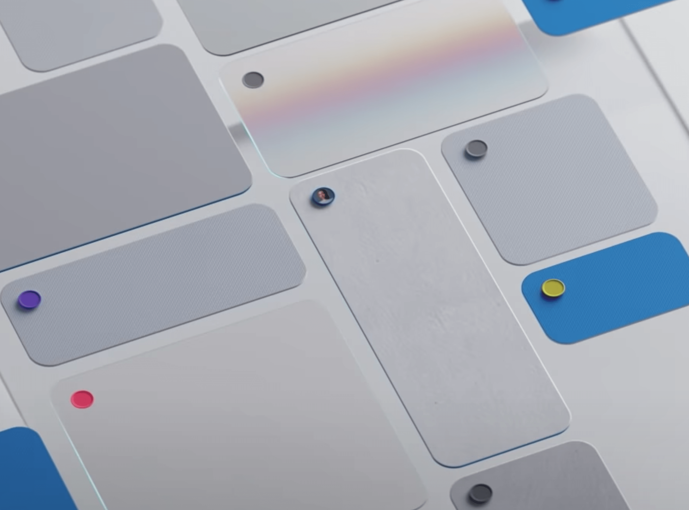
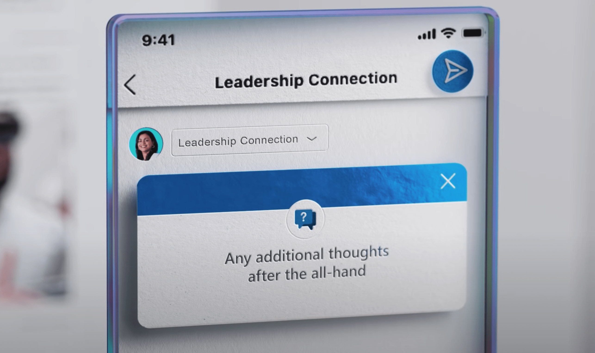
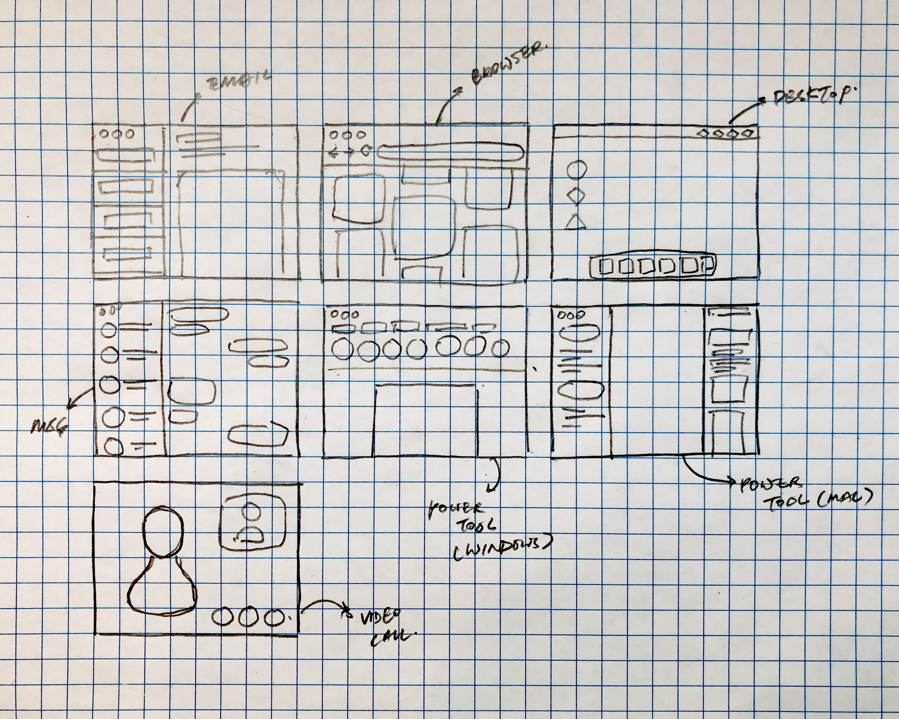
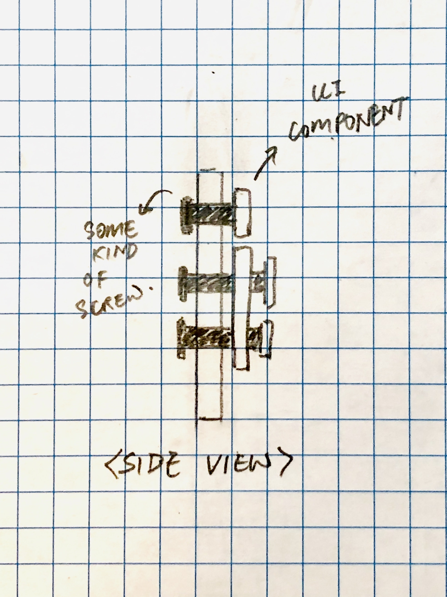

WEEK 7
My Final Project Plan

In this assignment, I provide an overview and projected timeline for my final project.
Introduction

Over the past year, a new trend of introducing different realistic textures (Skeuomorphism) was brought back to Dribbble in the form of "Neumorphism"
Inspired by the monotone and minimalistic aesthetic, I want to create a series of interfaces by creating each interface component as thin shapes and overlapping them onto a each canvas.
A good look-a-like example of this would be the interfaces shown in the Microsoft Yammer trailer.
 Potential Interfaces
To create designs that feel more relatable and timeless. I started sketching typical desktop interface layouts we encounter everyday.
To have some visual variance within this series, I will be creating a messaging interface, browser interface (with a masonry layout), and a productivity tool interface.
Implementation Details
Material
The backboard will be 3d printed using a white filament. If the final board is designed to be bigger than the print bed, the board will be cut up into smaller chunks and connected together with printed joints.
To create a more organic feel to this artwork, I will most likely be casting each of the UI components using plaster (unless I find a better material).
Overlapping Components
To create a nice depth using cast shadows, each overlapping component will be fastened using a screw. The screws will also need to be long enough if there are multiple layers.
Projected Timeline
05/20–05/23: Finalize UI designs including dimensions on Figma and purchase all of the required materials.
05/24: Convert the components from SVGs into 3D models in Rhino.
05/25–05/27: 3D print every single mold required.
05/28–06/02: Cast the components required and fasten them onto the interface.
06/03: Write up process and submit assignment.
Contingency Plans
Option A: In the situation where I don't have time to finish a series of screens1, I can scale down the scope of the project by only creating one interface. I can also adjust the complexity of the one interface by adding more details (depending on the time remaining).
Option B: In the case where I don't have enough material / time to mold and cast the componenets, I will 3D print all of the compoenents instead.